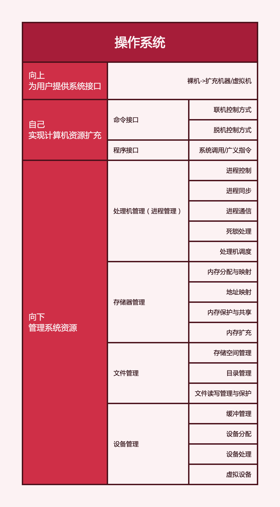

2022.05.20
计算机分层：硬件、操作系统、应用软件、用户。
操作系统的概念：控制和管理计算机系统的硬件和软件资源、组织调度计算机工作与分配资源、为用户和软件提供接口与环境的程序集合。
操作系统的目标：方便性（最重要）、时效性（最重要）、可扩展性、开放性
操作系统的作用：

OS实现了对计算机资源的抽象：OS是铺设在计算机硬件上的多层软件的集合，它可以对硬件或已抽象的模型进行抽象。(eg. 裸机+IO设备管理软件->第一层虚拟机+文件系统->第二层虚拟机+...)
操作系统的特征
并发：多个时间同一时间间隔内发生。
异步：多道程序环境允许多个程序并发执行，但由于资源受限，执行不能一贯到底。
接口 = 命令接口 + 程序接口
```mermaid graph LR MAIN(接口)--> A(程序接口/程序员接口/低级接口) A-->系统调用/广义指令
MAIN--> B(命令接口/用户接口/操作员级接口/高层接口) B-->联机命令接口/交互式命令接口 B-->脱机命令接口/批处理命令接口 ```
系统开机后，操作系统程序会被自动加载到内存的系统区，这段区域是RAM！